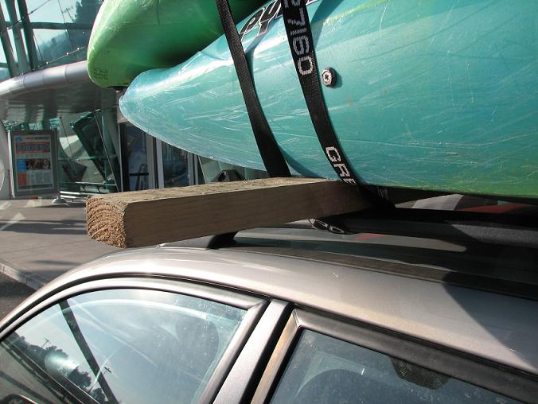
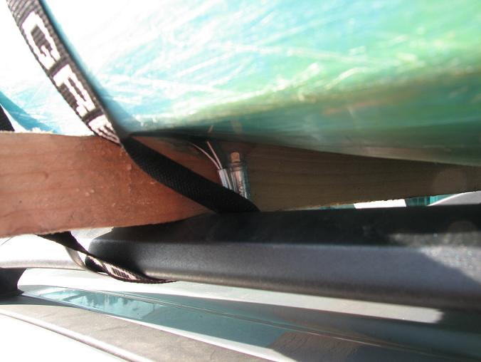
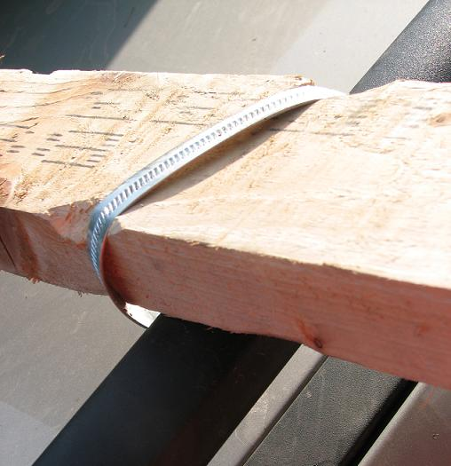
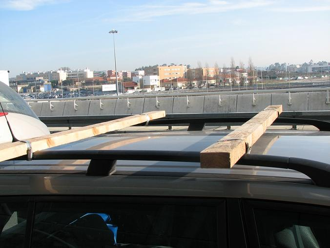

Information and links.
‘La indecisión es la llave a la
flexibilidad’
|
|
Information and links. |
||
|---|---|---|---|---|
|
‘La indecisión es la llave a la
flexibilidad’ |
Galicia and northern Portugal - information and links
People have been asking about the logistics of boating in Galicia and northern Portugal. So here are some pointers...
___Airports___
The nearby airports are Santiago de Compostela and Oporto (Porto). Further afield you have Lisboa (Lisbon) and Santander/Bilbao.
British paddlers should note that there's also a ferry from Plymouth to Santander, which might be an option.
___Guidebooks___
For northern Portugal we used 'Portugal Kayak' by Rui Calado. It's in Portuguese and English. For Galicia the book to get is 'Kayak en Galice' by Andres Sio Gonzalez, which is in Spanish and English. Both of these are available from French website canotier.com
___Websites and Forums___
The main Portuguese whitewater forum is canoagem.online.pt.
Its Spanish sister site is kayakonline.net.
___Our friends with websites and blogs___
Jorge Jorge at pagayak.com
Jorge Rabi�o at aquavertical.blogspot.com
Rob J. Coffey has an article on this trip on his blog at liveoncemedia.com
___Other links___
clasecinco.blogspot.com kayakgerd.blogspot.com
caiacbaixcinca.org/Joomla/index.php
Roofracks
People have asked about the homemade roofrack system and how it worked out, so here's a brief description. As trips like this usually involve one estate car for carrying boats and a little car for shuttle, you need a longer-than-standard roofrack to fit all the boats on one car. Hence a regular roofrack isn't much use.

Ingredients: One car, two 2-metre 2 by 2 wooden beams, four (or better, eight) jubilee clips, duct tape, river knife, permanent black marker.
Make sure the car you use is a hire car. Make sure the hire car you use has roofrails. Estates are good for this, but it's not always a given. Newer estates sometimes have silly decorative solid roofrails and you can't really attach anything to them. Ferg had to do some quick talking in Porto to get us a regular roofrail without alerting the hire company to our purpose.

To make an extra long roofrack that would accomodate more than the usual number of boats , we brought two 2-metre 2 by 2 beams with us in the paddle bag. You will also need at least four large jubilee clips (one for each point of attachment). It's a good idea to bring at least twice that number in case some break, and more importantly in case a single clip is not long enough to go around the beam and the roofrail (if that is the case, you can link two of them in the same way you would link two short roofstraps).
Trim away a portion of the beam to get the jubilee clip to sit down easily and prevent it gouging into the boat plastic. In hindsight it would have been a good idea to duct tape either the beam or the roofrail to prevent scratching. As it happens we didn't think of that, but we did use a permanent black marker to disguise the inevitable scratch marks on the roofrail before dropping the car back.

We never had to retighten the jubilee clips in two weeks and nothing ever budged. This is a rock-solid alternative roofrack. It's cheap, adaptable, and you can ditch it when you're finished. Just do it out of sight of the car hire office.
